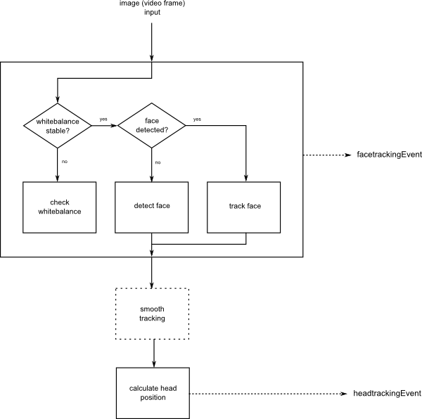
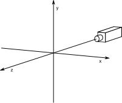
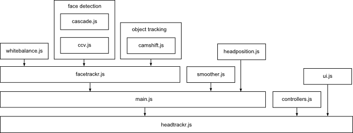

Library Reference
Flow
This is the rough process that will happen on regular intervals once headtrackr is started. On initialization we will also check whether getUserMedia is supported and if we are able to stream from a camera at all.

Events
Once started, headtrackr.js produces three types of events on the document. headtrackrStatus is triggered on any changes in status, such as when the face is detected, when tracking of the face is lost, and similar. facetrackingEvent is triggered every 20 ms (depending on detection interval), and gives us the position of the face on the canvas. headtrackingEvent is also triggered every 20 ms, and gives us the calculated position of the head relative to the camera. Note that these two events will first be triggered when the face is detected and tracked. Details of what properties each event passes along are below, and actions can be triggered by any of these events in the standard way:
document.addEventListener('headtrackrStatus',
function (event) {
if (event.status == "getUserMedia") {
alert("getUserMedia is supported!");
}
}
);
headtrackrStatus:
- status : status of headtracking. Can have these values:
- "getUserMedia" : getUserMedia seems to be supported
- "no getUserMedia" : getUserMedia seems not to be supported
- "camera found" : camera found and allowed to stream
- "no camera" : camera not found, or streaming not allowed, or getUserMedia setup failed
- "whitebalance" : initialized detection of graylevels
- "detecting" : initialized detection of face
- "hints" : detecting the face took more than 5 seconds
- "found" : face detected, tracking initialized
- "lost" : lost tracking of face
- "redetecting" : trying to redetect face
- "stopped" : face tracking was stopped
facetrackingEvent:
- height : height of face on canvas
- width : width of face on canvas
- angle : angle of face on canvas (in radians). The angle is calculated in normal counter-clockwise direction. I.e. if head is upright, this will return π/2, if head is tilted towards right (as seen on canvas), this will return a degree between 0 and π/2. Note that this is only calculated if "calcAngles" is enabled via parameters, default is that this is not enabled. When "calcAngles" is not enabled, this will always return π/2, i.e. 90°.
- x : x-position of center of face on canvas
- y : y-position of center of face on canvas
- confidence : confidence in the detection (will only give a value for detection, not tracking)
- detection : type of detection/tracking, either "VJ" for Viola-Jones or "CS" for Camshift
- time : How long time it took to calculate this position (for debugging only)
headtrackingEvent:
- x : position of head in cm's right of camera as seen from users point of view (see figure)
- y : position of head in cm's above camera (see figure)
- z : position of head in cm's distance from camera (see figure)

Parameters
When initializing the objects headtrackr.Tracker, headtrackr.facetracker.Tracker or headtrackr.camshift.Tracker, you can optionally specify some parameters, for instance:
var ht = new headtrackr.Tracker({ui : true, headPosition : false});
The optional parameters that can be passed along to headtrackr.Tracker are :
- ui {boolean} : whether to create messageoverlay with messages like "found face" (default is true)
- altVideo {object} : urls to any alternative videos, if camera is not found or not supported. The format is : {'ogv' : 'somevideo.ogv', 'mp4' : 'somevideo.mp4', 'webm' : 'somevideo.webm'}
- smoothing {boolean} : whether to use smoothing (default is true)
- debug {canvas element} : pass along a canvas to paint output of facedetection, for debugging
- detectionInterval {number} : time we wait before doing a new facedetection (default is 20 ms)
- retryDetection {boolean} : whether to start facedetection again if we lose track of face (default is true)
- fov {number} : horizontal field of view of used camera in degrees (default is to estimate this)
- fadeVideo {boolean} : whether to fade out video when face is detected (default is false)
- cameraOffset {number} : distance from camera to center of screen, used to offset position of head (default is 11.5)
- calcAngles {boolean} : whether to calculate angles when doing facetracking (default is false)
- headPosition {boolean} : whether to calculate headposition (default is true)
The optional parameters to headtrackr.facetrackr.Tracker :
- smoothing {boolean} : whether to use smoothing on output (default is true)
- smoothingInterval {number} : should be the same as detectionInterval plus time of tracking (default is 35 ms)
- sendEvents {boolean} : whether to send events (default is true)
- whitebalancing {boolean} : whether to wait for camera whitebalancing before starting detection (default is true)
- calcAngles {boolean} : whether to calculate orientation of tracked object (default for facetrackr is false)
Optional parameters to headtrackr.camshift.Tracker :
- calcAngles {boolean} : whether to calculate orientation of tracked object (default for camshift is true)
Elements

- ccv.js : generic viola-jones type detection, from libccv
- cascade.js : face data model for ccv.js for detecting faces, from libccv
- camshift.js : camshift object tracker
- facetrackr.js : wrapper around object tracker and face detector. Where most coordination happens
- smoother.js : generic time series smoother
- headposition.js : calculation of position of head in relation to screen
- main.js : wrapper around everything. Where everything is initiated.
- controllers.js : optional eventhandlers that create head-coupled perspective based on headtracking events
- whitebalance.js : a simple function for calculating graylevel, used for whitebalancing/levels
- ui.js : optional element that creates messaging ui on status events
- license.js : license
- headtrackr.js : minified version of library
{kind=link}
{kind=link}